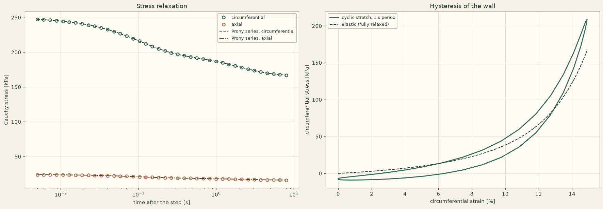
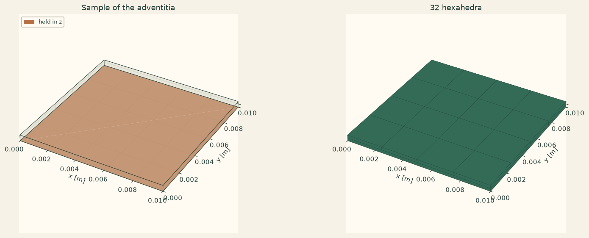

Docs › Examples › Viscoelastic arterial wall under biaxial stretch
Soft tissue · 3D
Viscoelastic arterial wall under biaxial stretch
A sample of the adventitia of the human iliac artery, stretched biaxially and held, then stretched cyclically, with collagen fibres and viscoelastic relaxation.
Run locally with OneSimulation. The example downloads are free. Running them requires an activated runtime. OneSimulation 1.0 · CPython 3.13 on macOS (Apple Silicon), Ubuntu 22.04 (x86-64), and Windows x64. Installation and activation · View pilot plans. Scope of the reference checks.


What it computes
OneSimulation solves the finite-strain mixed formulation of the anisotropic Gasser-Ogden-Holzapfel tissue with two dispersed fibre families and two Prony relaxation branches on the 3D sample read from STEP. A step stretch shows the relaxation to the elastic state and a cyclic stretch the hysteresis loop of the wall. The script that builds the STEP file comes with the notebook.
What it checks
The stresses relax onto the Prony series within 0.009 % over 8 s and settle at the published calibration of Gasser et al. (2006), 166.6 kPa circumferential and 16.1 kPa axial, within 0.011 %; the radial stress vanishes to 7e-7 Pa, the volume ratio stays within 5e-6 of one, and one cycle dissipates 2.38 kJ/m³.
Geometry
Save the STEP file arterial_wall_viscoelastic_relaxation.step next to the notebook before running it.


The geometry script
The script arterial_wall_viscoelastic_relaxation_geometry.py builds the geometry with the CAD objects of OneSimulation and writes the file. Change a dimension there, run it, and run the notebook again.
"""Geometry of the OneSimulation example "Viscoelastic arterial wall under biaxial stretch".
Builds a square sample of the adventitia of an artery, 10 x 10 mm and 0.43 mm thick (the wall
thickness of the human iliac artery), with the CAD objects of OneSimulation and writes
arterial_wall_viscoelastic_relaxation.step. x is the circumferential, y the axial and z the radial
direction of the vessel; the faces keep the names x_min ... z_max.
"""
from onesim.cad.d3 import Box
Box(length=10.0e-3, width=10.0e-3, height=0.43e-3).save(
"arterial_wall_viscoelastic_relaxation.step"
)The notebook
The complete notebook, cell by cell. Run it to produce the figures and the comparison printout.
Arterial walls owe their stiffening under pressure to collagen fibres wound helically around the vessel. Gasser, Ogden and Holzapfel modelled them with an isotropic neo-Hookean matrix and two fibre families at \(\pm\alpha\) to the circumferential direction, with a dispersion \(\kappa\):
with \(\mu=7.64\) kPa, \(k_1=996.6\) kPa, \(k_2=524.6\), \(\kappa=0.226\) for the adventitia of the human iliac artery. The wall also creeps and relaxes. Two relaxation branches (Prony terms) with relative strengths \(g_1=0.3\), \(g_2=0.2\) and times \(\tau_1=0.1\) s, \(\tau_2=2\) s act on the isochoric stress, so that a sudden stretch first meets a stiffer wall which then relaxes to the elastic one.
A square sample, 10 x 10 mm and 0.43 mm thick, comes from the CAD file arterial_wall_viscoelastic_relaxation.step (\(x\) circumferential, \(y\) axial, \(z\) radial); the script arterial_wall_viscoelastic_relaxation_geometry.py builds it with the CAD objects of OneSimulation.
| face | condition |
|---|---|
| all faces | \(u_x=(\lambda_\theta-1)\,x\), \(u_y=(\lambda_z-1)\,y\) (biaxial stretch) |
z_min | \(u_z=0\); the thickness follows from incompressibility |
Reference. Gasser, Ogden and Holzapfel (J. R. Soc. Interface 3, 15, 2006, Sec. 5.1) fit the model to the inflation of an iliac adventitia at 13.67 kPa with the fibre angle \(\alpha=39.98°\), where the stretches are \(\lambda_\theta=1.149\) and \(\lambda_z=0.861\). For a homogeneous state the Cauchy stresses follow in closed form from \(\Psi\) with \(\sigma_{rr}=0\). For an instantaneous step the Prony branches scale the elastic stress by \(1+\sum_i g_i\,e^{-t/\tau_i}\) (Holzapfel, Nonlinear Solid Mechanics, Sec. 6.10).
import numpy as np
from onesim.cad.exchange import load
from onesim.meshing import StructuredHexahedralMesher
from onesim.physics.biophysics import (
ContinuumTissue,
FiberReinforcedTissue,
TissueRelaxationBranch,
)
from onesim.visualization import plots, theme
theme.set()Geometry and mesh
sample = load("arterial_wall_viscoelastic_relaxation.step")
faces = sample.boundaries
mesh = StructuredHexahedralMesher(cells=(4, 4, 2)).generate(sample)
view = plots.Camera(elevation=35, azimuth=-60)
fig = plots.figure(1, 2, size=(14, 5))
plots.geometry(
sample,
selection={"held in z": faces.z_min},
labels=False,
camera=view,
title="Sample of the adventitia",
ax=fig[0],
)
plots.mesh(
mesh,
groups=("all",),
legend=False,
camera=view,
title=f"{mesh.cell_count} hexahedra",
ax=fig[1],
)
plots.show()Model
FiberReinforcedTissue.iliac_adventitia holds the published constants; the relaxation branches are added to it. A very large bulk modulus makes the wall practically incompressible. The step is applied at \(t=0\) and held for 8 s; a second run stretches the sample cyclically.
angle = np.deg2rad(39.98)
elastic = FiberReinforcedTissue.iliac_adventitia(bulk_modulus=2e10, fiber_angle=angle)
branches = (
TissueRelaxationBranch(ratio=0.3, time=0.1),
TissueRelaxationBranch(ratio=0.2, time=2.0),
)
tissue = ContinuumTissue(
material=FiberReinforcedTissue(
shear_modulus=elastic.shear_modulus,
bulk_modulus=elastic.bulk_modulus,
fibers=elastic.fibers,
relaxation=branches,
)
)
stretches = (1.149, 0.861)
times = np.r_[0.0, np.geomspace(0.005, 8.0, 40)]
step = tissue.solve(
mesh=mesh,
times=times,
displacements=(
(faces.all, "x", lambda x, t: (stretches[0] - 1) * x),
(faces.all, "y", lambda y, t: (stretches[1] - 1) * y),
(faces.z_min, "z", 0.0),
),
)
period = 1.0
history = lambda t: (1 - np.cos(2 * np.pi * t / period)) / 2
cycles = np.linspace(0.0, 3 * period, 121)
cyclic = tissue.solve(
mesh=mesh,
times=cycles,
displacements=(
(faces.all, "x", lambda x, t: (stretches[0] - 1) * history(t) * x),
(faces.all, "y", lambda y, t: (stretches[1] - 1) * history(t) * y),
(faces.z_min, "z", 0.0),
),
)Results
The published model gives the long-term (elastic) stresses; the computed stresses at the end of the hold and their history are compared with it.
def published(stretch):
"""Circumferential and axial Cauchy stress of the calibrated adventitia under plane stress."""
squared = np.array([stretch[0], stretch[1], 1 / (stretch[0] * stretch[1])]) ** 2
dispersed = 0.226 + (1 - 3 * 0.226) * np.array(
(np.cos(angle) ** 2, np.sin(angle) ** 2, 0)
)
invariant = dispersed @ squared - 1
principal = squared * (
7640.0 + 4 * 996600.0 * invariant * np.exp(524.6 * invariant**2) * dispersed
)
return principal[:2] - principal[2]
long_term = published(stretches)
computed = step.cauchy_stress[:, :, (0, 1), (0, 1)].mean(axis=1)
prony = lambda t: 1 + sum(
branch.ratio * np.exp(-t / branch.time) for branch in branches
)
print(
f"published long-term stress: circumferential {long_term[0] / 1e3:.3f} kPa, axial {long_term[1] / 1e3:.3f} kPa"
)
print(
f"after 8 s: circumferential {computed[-1, 0] / 1e3:.3f} kPa, axial {computed[-1, 1] / 1e3:.3f} kPa "
f"({100 * (computed[-1, 0] / (long_term[0] * prony(8.0)) - 1):+.3f} %, {100 * (computed[-1, 1] / (long_term[1] * prony(8.0)) - 1):+.3f} %)"
)
print("time [s] circumferential [kPa] Prony series [kPa] deviation")
for t, value in list(zip(times, computed[:, 0]))[1::8]:
print(
f"{t:8.3f} {value / 1e3:20.3f} {long_term[0] * prony(t) / 1e3:20.3f} {100 * (value / (long_term[0] * prony(t)) - 1):+10.3f} %"
)
print(
f"largest deviation of the relaxation from the Prony series: {100 * np.abs(computed[1:, 0] / (long_term[0] * prony(times[1:])) - 1).max():.3f} %"
)
print(
f"radial stress (should vanish): {np.abs(step.cauchy_stress[:, :, 2, 2]).max():.2e} Pa; volume ratio J - 1: {np.abs(step.jacobian - 1).max():.1e}"
)
loop = cyclic.cauchy_stress[:, :, 0, 0].mean(axis=1)
strain = (stretches[0] - 1) * history(cycles)
last = cycles >= 2 * period
print(
f"energy dissipated per cycle in the circumferential direction: {abs(np.trapezoid(loop[last], strain[last])) / 1e3:.4f} kJ/m³"
)Figure
The relaxation of both stresses after the step against the Prony series, and the stress-strain loop of the cyclic stretch with the elastic curve.
fine = np.geomspace(0.005, 8.0, 200)
elastic_curve = [
published((1 + (stretches[0] - 1) * h, 1 + (stretches[1] - 1) * h))[0]
for h in np.linspace(0, 1, 60)
]
fig = plots.figure(1, 2, size=(16, 5.5))
plots.line(
points={
"circumferential": (times[1:], computed[1:, 0] / 1e3),
"axial": (times[1:], computed[1:, 1] / 1e3),
},
reference={
"Prony series, circumferential": (fine, long_term[0] * prony(fine) / 1e3),
"Prony series, axial": (fine, long_term[1] * prony(fine) / 1e3),
},
scale="logx",
xlabel="time after the step [s]",
ylabel="Cauchy stress [kPa]",
title="Stress relaxation",
ax=fig[0],
)
plots.line(
y={"cyclic stretch, 1 s period": (100 * strain[last], loop[last] / 1e3)},
reference={
"elastic (fully relaxed)": (
100 * (stretches[0] - 1) * np.linspace(0, 1, 60),
np.array(elastic_curve) / 1e3,
)
},
xlabel="circumferential strain [%]",
ylabel="circumferential stress [kPa]",
title="Hysteresis of the wall",
legend="upper left",
ax=fig[1],
)
plots.show()Going further
Change the fibre angle to \(59.98°\), the second calibration of the same paper; make the relaxation act more slowly to approach the elastic curve; or load a tube of arterial wall with a pulsatile pressure (pressures= in solve) and follow the diameter over the heartbeat.